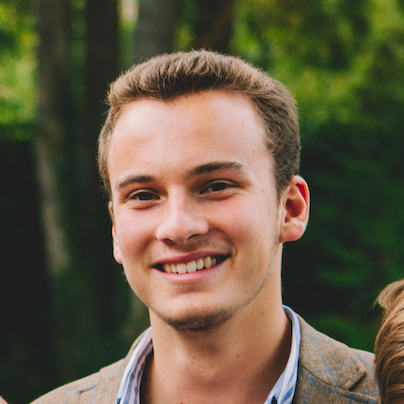
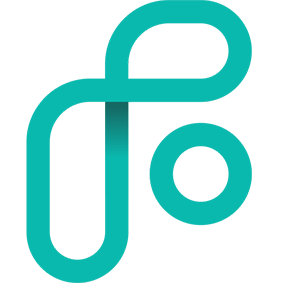

Hello, I'm Guillaume
My name is Guillaume SIMEON. I'm 22 years old and I'm based in Paris. I'm a french student in Marketing and Data Science with a strong interest for the automotive industry.
Let's get in touchProfessional
 Porsche France
Porsche France
2019
Communication and Digital Projects
 Mercedes-Benz France
Mercedes-Benz France
2018
Prospector during the Paris Motor Show
 BMW France
BMW France
2017
Digital Marketing Assistant
PressingBox
2014
Community Manager
Studies
EM Lyon Business School
2018 - 2019
MSc in Digital Marketing & Data Science
ECNU
2019
Shanghai
ESSEC Business School
2014 - 2018
Bachelor in Business Administration
Université Laval
2017
Québec
Cardiff University
2016
Cardiff
Institut de l'Assomption Lübeck
1999 - 2014
Baccalauréat général, filière ES
About Photography
gui.smn is one of the many nicknames of Guillaume SIMEON; a self taught artist with a love for wild places.
Initially a landscape painter, it was only in search of source materials that he picked up a camera. Once the speed and versatility of digital photography was discovered, he was hooked.
Fascinated by the subtle line between perception and reality, Guillaume is neither a realist nor surrealist, but searches for an interweaving of both the physical and the spiritual nature of experience; our place within a larger natural order.
Inspiration comes from artists like Albert Bierstadt, Thomas Moran, Caspar David Friedrich, George Inness, Georgia O'Keeffe and Edgar Payne. A keen interest in eastern philosophy, led him to the work of Japanese woodblock artists like Hokosai and Hiroschige.
Check out my latest photograph:
Other Skills and Interests
Language
French, English, Spanish, Portuguese
Computer
Adobe: Photoshop, Illustrator, Lightroom
Office: PowerPoint, Word, Excel, VBA, PowerBI
Tableau
Code: Python, R, SQL
Google and Adobe Analytics
Sports
Tennis, Football, Ski, Golf, Trekking...
Travel
USA, Canada, China, UK, North Africa...
Photography
Amateur landscape photograpy since 2015
Automobile
Strong interest in the premium car industry